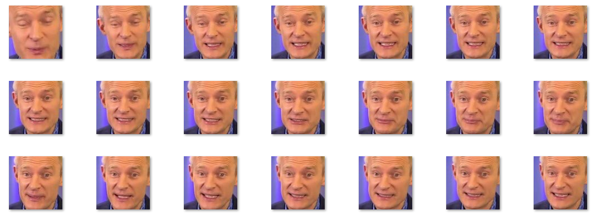
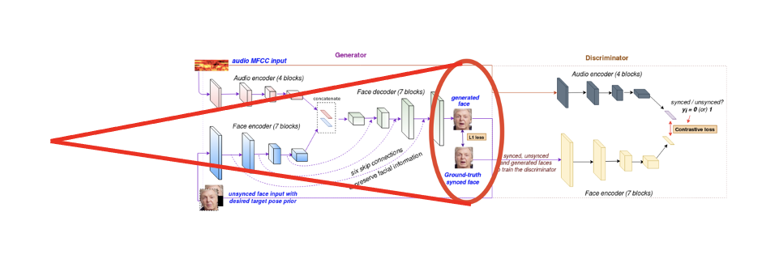
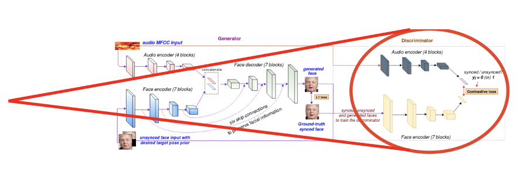

LipGAN: Speech to Lip Sync Generation
(presentation slides) (PDF)
Motivation
Broad applications of this task include realistic foreign language dubbing in movies, CGI animation, conversational agents in telecommuting or distance education, and gaming. In this work, we explore this audio deepfake model, LipGAN, and attempt to improve upon its limitations.
Previous Work
ObamaNet
Paper Link
Text-based Editing of Talking-Head Video
- Transcript alignment to the video at the level of phonemes
- A 3D parametric head model is registered with the video
- A Viseme search is preformed to find the best match between the phonemes in the edit and the phonemes in the input video
- Blending of the parameters of the 3D head model
- Render the resulting video
Neural Voice Puppetry
Paper Link
Dataset and Preprocessing
Dataset Description
We trained the model using the Lip Reading Senetences 2 (LRS2) [2], an audio-visual speech recognition dataset collected from in-the-wild videos. It consists of thousands of spoken sentences from BBC television. Each sentences is up to 100 characters in length. The training, validation, and test sets are divided according to broadcast date. The train set contains 45,839 utterances with 329,180 words instances and 17,660 vocab size.Preprocessing
In order to prepare the dataset, we extracted the frames at 25fps using opencv and trimmed the face coordinates of the speaker. We used dlibget_frontal_face_detector to detect the speaker face from the video frames. Each detected face is resized to 96×96. LipGan requires that audio files are in the form of a Mel-frquency cepstrum features (MFCCs) so we converted the audio files to match this format. An example of preprocessed outputs for a video is shown in the figure below. State-of-the-art Model Implementation
Model architecture overview
Generator network
In our work, we reimplented the LipGAN model. Its architecture, shown in the diagram above, is comprised of two networks: a generator, composed of a face encoder, audio encoder, and face decoder, and a discriminator, composed of another face encoder and audio encoder. Training these networks together in an adversarial model achieves higher accuracy as the generator learns to create a more natural lip synchronization.Face Encoder
By inputting the identity face image and the ground truth of the face pose, the face encoder encodes a sequence of images of a talking face. The target face pose is constructed by masking the lower half of the face such that the ground truth lip shape remains hidden from the encoder. This module is a CNN with a series of residual blocks with intermediate down-sampling layers.Audio Encoder:
The audio encoder encodes a segment of audio by transforming a MFCC heatmap into an audio embedding. This module is a standard CNN and, together with the face encoder, produce a joint audio-visual embedding. This assembled output of the audio and face encoder is used as input for the face decoder.Face Decoder
Inputting the concatenated outputs of the face and audio encoders, the face decoder attempts to generate an image of a person’s face that matches the lip shape corresponding to the audio segment at a given time interval. This CNN consists of a series of residual blocks with intermediate deconvolutional layers which upsample the feature maps. Six skip connections are used after each upsampling operation to help feed enough information about the facial features. This assists in preserving the quality of the facial features while generating the image of the face.Discriminator network
Within the discriminator network, the output from the generator network is fed into a new face encoder. The discriminator calculates a contrastive loss from the output of both the face encoder and audio encoder. The value of this loss determines if the generated face is synchronized with the audio input or if it is not in sync.Joint Training
Training the GAN framework involves a number of steps. First, a T millisecond window of an inputted video sample is randomly chosen along with its corresponding audio segment A. The ground truth pose of the person is selected by identifying the middle frame S of the window, and the lower portion of the face is masked (Sₘ). A frame outside of the selected window, S', is sampled and is assumed to be out of sync from the selected audio segment A.Inputting the audio segment A and the frame outside the selected window S' concatenated channel wise with the masked ground truth face Sₘ, the generator attempts to generate the in-sync talking face, G ([S′; Sₘ], A) ≈ S, at each training batch.
At each training batch to the discriminator network, synthesized samples from the generator network, original frames with their target audio segments, and original frames that are out of synch with the target audio segments. The discriminator calculates the following contrastive loss for each set of training samples in y:


Experiments
Weighted L1 reconstruction loss
- Idea: Lip reason contributes to less than 4% of the total reconstruction loss. Can we improve by focusing on the lip region.
- We observed that Lip region contributes to only 4% of total face ares i.e. the reconstruction loss. We hypothesize that we can use weighted loss to have extra supervision around lip region.
- Early epochs vs late epochs reconstruction loss: Without weighted loss, the network starts to morph the lip region only at around half way through training process (roughly 10 epoch). Using weighted loss, even the earlier epochs start focusing on the lip region. But after 15 epochs or so, both models achieve similar L1 reconstruction loss (MAE).
- One justification could be that we are passing the target pose prior (which is the face frame with masked lip region), Generative model learns to copy the non-lip face region anyways (be it in inital epochs or later epochs). Eventually focusing on lip region is redundant after midway through the training process, as both model versions will start focusing on the difficult part (morphing the lip region) than easy part (copy the non-lip region from target pose prior).
Discriminator Network: Need for an expert discriminator
- Idea: In the literature, researchers have tried using an additional expert lip sync discriminator. Note this expert discriminator is pre-trained and not updated during the training process. So, we wanted to establish the rationale behind how having an expert discriminator helps.
- We evaluated our dicriminator model (learned as a part of GAN framework), and found that it is indeed not a good discriminator and have just around 63% accuracy on 1000 randomly generated lip sync face images.
- The discriminator trained as a part of GAN framework is weak given the presenece of lot of artifacts due to large scale and pose variations. So, having an additional expert pre-trained discriminator provides better supervision to the generator network.
- We wanted to try out multiple discriminators (one for visual quality, and one for lip sync) in a multi-task learning setting, but could not experiment given the resource limitation. (Implementational challenges discussed later)
Limitations
Difficult to quantitatively measure shortcomings
One of the biggest challenges that we faced was that it was hard to have a quantitative measure of the model’s performance which could substitute human qualitative evaluation. Most of the quantitative measures has its limitations, and we need to depend on human evaluation. For example, landmark distance which is defines as the sum of pointwise movement of lip keypoints over a time period. The lower the better: This can be satisfied by just reducing the lip movement globally (as in mumbling lip movement) . Similarly, other structural measure like SSIM (Structural SIMilarity Index) and PSNR (Peak signal-to-noise ratio) were designed to evaluate the overall image quality and not fine grained lip sync error.Spurious lip region detection
We have noticed that lip-sync generation has spurious movements on non-lip region, like lower chin or side chin as shown below (right video). We have observed this when the face detection module fails to correctly localize the lip region. Profile view of the detected face usually faces this limitation. We are using dlib facial keypoints detector.Profile face overcompensation/skewed lip sync
Profile view of the detected face usually suffers from skewed lip movements i.e One side of lip has more movement than the other side.Teeth Region Deformation: crooked teeth OR no teeth at all
We observed that the LipGAN model generates image frames which smoothed out teeth and lip region. Lower teeth is merged with upper lip and smoothed out. In many cases, generated face images have crooked teeth, leading to very random/ discontinuous teeth contour.Limitations due to facial expression
We also noticed that the model performs worse on faces with certain facial expressions, for example person in deep frown.Issues with lip movement and audio synchronization
Especially, background music leads to high murmuring lip movement. We usually don’t remove noise while using MFCC or Spectrogram heat maps, as usually learnt CNN filters should take care of that. But when we have background music (not noise) and music has a proper frequency representation, it becomes difficult for CNN models to distinguish music and speaker voice. Alternatively, we can remove noise during preprocessing step, but removing background music may require additional effort.Implementation Challenges
We faced many implementational challenges- mostly due to the large dataset size and huge model trainable parameters.- LRS2 dataset acquisition and pre-processing tasks were not easy given the huge size (roughly 50GB). Thepre-processed files were not readily available for use because of the signed Data Sharing agreement with BBC Research & Development. After several attempts, we were able to download the part files and save itto shared Google Drive. Now, we can mount the shared drive on Google Colab VM.
- Another implementational challenge has to do with the limitations of Google Colab including running session timeouts and disk quota constraints. Even having a google colab PRO subscription, it closes the job after a certain time (not fixed, usually 24ish hour). We had to be cautious not to exhaust google drive disk quota or File read-write operations. We trained our model on Google Colab.
- Although the original model described in the LipGAN paper utilizes MATLAB and was the one most extensively researched, due to issues working with the MATLAB implementation and our preference for using Python, we are using Python to implement the model. We had to resolve multiple python packages dependencies issues to have a working setup on GoogleColab.
Discussion
We tried out the LipGAN model for cartoon characters too. It works reasonably well with animated cartoon as well. We can create lip-synced bitmoji or AR emoji using LipGAN.
Future Work
- Need more detailed keypoint detector for lip region: Having more keypoints in lip region will help the model to create a more precise boundary between lips, teeth, side chin, etc. It will help in better supervision in reconstruction loss or discriminator network.
- Worth trying out 3D representation of face, with mesh-like grid to have more structured and smooth lip movement along with side cheeks, jawline etc. (muscles getting pulled/pushed/squeezed). It will also enforce a sense of depth measure.
- Million dollar idea: Live lip-syncing in video call, say zoom call (even if speaker is not sharing his video feed, we just need one static face image). By doing so, we can have both live lip-synced video and privacy. Many psychological research have concluded that live video feed have better engagement. So we can use LipGAN generated anonymous/avatar video feed or using the static face image.
- Lip-synced dubbed movies/Tv series: I lip-synced 10 min of “Money Heist” (dubbed from Spanish to English) and I definitely liked watching the lip-synced version!
Privacy Matters!
Project Presentation Video
Some additional Result samples
PDF Reports
REFERENCES
- [1] Prajwal KR, Rudrabha Mukhopadhyay, Jerin Philip, Abhishek Jha, Vinay Namboodiri, and CV Jawahar. Towards automatic face-to-face translation. In Proceedings of the 27th ACM International Conference on Multimedia, pages 1428–1436, 2019
- [2] Triantafyllos Afouras, Joon Son Chung, Andrew Senior, Oriol Vinyals, and Andrew Zisserman. Deep audio-visualspeech recognition. IEEE transactions on pattern analysis and machine intelligence, 2018.
- [3] Lele Chen, Zhiheng Li, Ross K Maddox, Zhiyao Duan, and Chenliang Xu. Lip movements generation at a glance. In Proceedings of the European Conference on Computer Vision (ECCV), pages 520–535, 2018.
- [4] Joon Son Chung and Andrew Zisserman. Out of time: automated lip sync in the wild. In Asian conference oncomputer vision, pages 251–263. Springer, 2016.
- [5] Lip reading sentences in the wild agreement (lrs2) document.https://www.bbc.co.uk/rd/projects/lip-reading-datasets.
- [6] The oxford-bbc lip reading sentences 2 (lrs2) dataset.https://www.robots.ox.ac.uk/~vgg/data/lip_reading/lrs2.html.
- [7] Google colaboratory.https://colab.research.google.com/.
- [8] https://github.com/Rudrabha/LipGAN/tree/fully_pythonic
- [9] Prajwal, K.R., Mukhopadhyay, R., Namboodiri, V.P. and Jawahar, C.V., 2020, October. A lip sync expert is all you need for speech to lip generation in the wild. In Proceedings of the 28th ACM International Conference on Multimedia (pp. 484-492).
- [10] Masood, Momina, Marriam Nawaz, Khalid Mahmood Malik, Ali Javed, and Aun Irtaza. "Deepfakes Generation and Detection: State-of-the-art, open challenges, countermeasures, and way forward." arXiv preprint arXiv:2103.00484 (2021).
- [11] Prajwal, K.R., Mukhopadhyay, R., Namboodiri, V.P. and Jawahar, C.V., 2020. Learning individual speaking styles for accurate lip to speech synthesis. In Proceedings of the IEEE/CVF Conference on Computer Vision and Pattern Recognition (pp. 13796-13805).
- [12] Chung, J.S., Jamaludin, A. and Zisserman, A., 2017. You said that?. arXiv preprint arXiv:1705.02966.
- [13] Rithesh Kumar, Jose Sotelo, Kundan Kumar, Alexandre de Brébisson, and YoshuaBengio. 2017. Obamanet: Photo-realistic lip-sync from text.arXiv preprintarXiv:1801.01442(2017).
- [14] Ohad Fried, Ayush Tewari, Michael Zollhöfer, Adam Finkelstein, Eli Shecht-man, Dan B Goldman, Kyle Genova, Zeyu Jin, Christian Theobalt, and ManeeshAgrawala. 2019. Text-based editing of talking-head video.ACM Transactions onGraphics (TOG)38, 4 (2019), 1–14
- [15] Justus Thies, Mohamed Elgharib, Ayush Tewari, Christian Theobalt, and MatthiasNießner. 2019. Neural Voice Puppetry: Audio-driven Facial Reenactment.arXivpreprint arXiv:1912.05566(2019)